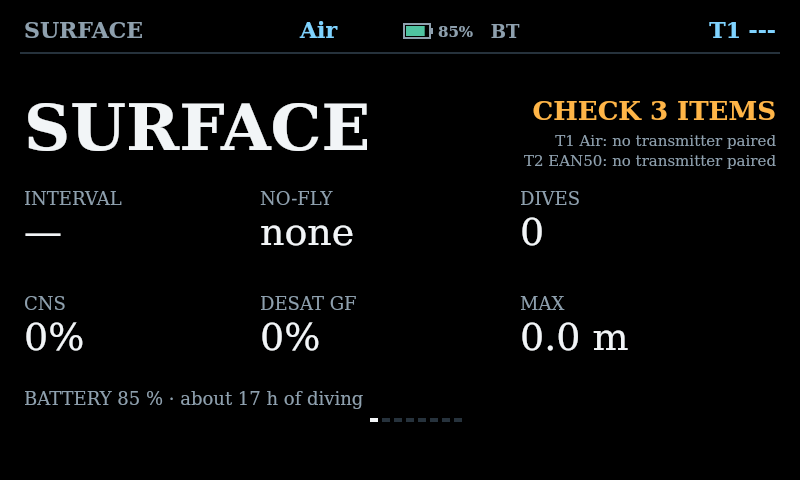
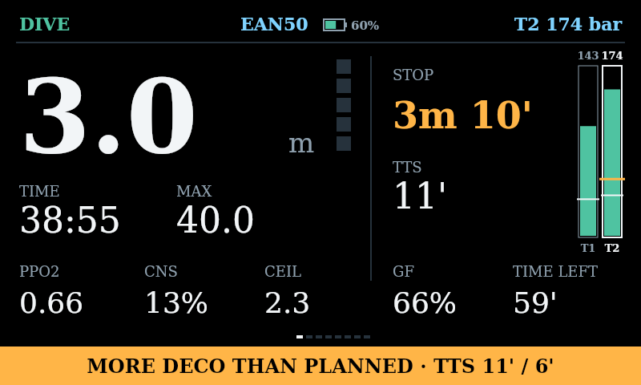
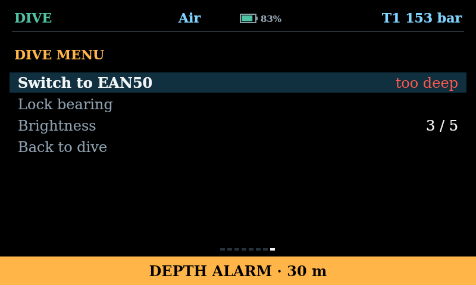
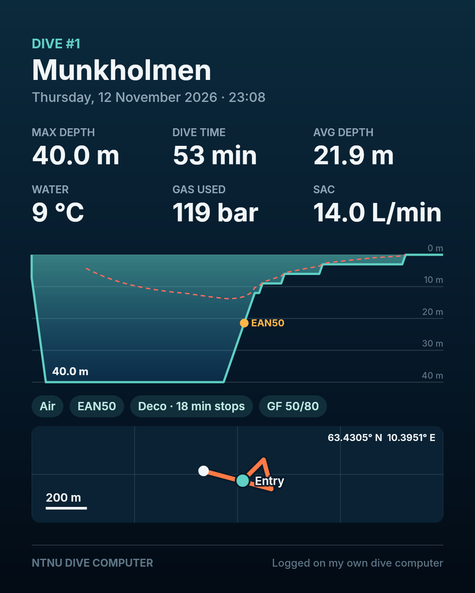
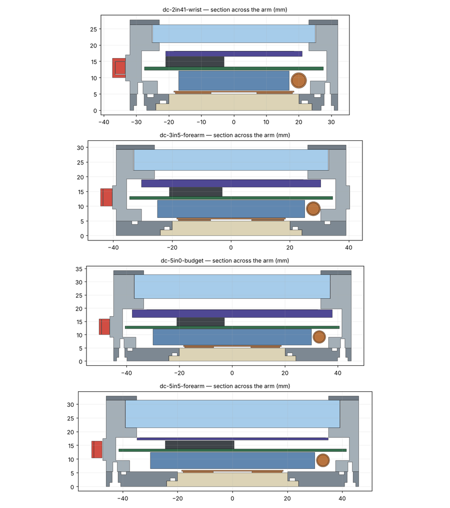

Et studentprosjekt i marin teknikk ved NTNU: en dykkecomputer med stor skjerm, dekompresjonsberegning, lesing av flasketrykk fra trådløse sendere, kompass og en mobilapp. Simulatoren under kjører den samme C-koden som skal ligge på dykkecomputeren, kompilert til nettleseren.
Ikke til ekte dykking. Dette er en prototype som ikke er validert. Deko-beregningen er testet mot en uavhengig planlegger, men fastvaren har ennå ikke kjørt på maskinvaren og huset er ikke trykktestet.
Slik tester du simulatoren
Velg et dykk under Run → Dive, for eksempel «Deco: 40 m, 25 min», og sett farten til 20× eller 60×.
Bla mellom skjermsidene med UP og DOWN under skjermen. Hold SELECT for menyen: full meny på overflaten, kort dykkemeny under vann.
Velg «Mistakes» for å se alarmene: for dypt for gassen, for rask oppstigning og brutt deko-tak.
Skru ned batteriet, huk av «Weak battery in T1» eller øk støyen på senderne for å se varslene og sjekken før dykket.
I Phone app-panelet: koble til, legg inn utstyr og synk det, lag en dykkeplan og send den til computeren.
Etter dykket (5 min på overflaten): last ned loggen, eksporter til Subsurface, eller trykk Share for et bilde med profil og kart.
Mobilappen
Kobler til den ekte dykkecomputeren over Bluetooth: utstyr, dykkeplan, innstillinger, sjekk før dykket, logger, statistikk og fastvareoppdatering.
Virker i Chrome på Android, Windows, macOS og Linux. iPhone har ikke Bluetooth i nettleseren og trenger en egen app.
Uten maskinvare: bruk telefonpanelet i simulatoren. Det er den samme appen, koblet til den simulerte computeren.
Fra simulatoren

Overflaten: sjekk før dykket, batteri og flyforbud.

Under dykket: stopp, tid til overflaten, flasker, og varsel når dykket avviker fra planen.

Dykkemenyen: gassbytte stoppes når gassen er for rik for dybden.

Delingsbilde fra appen, som i Strava.

Tverrsnitt av husene, dimensjonert for 100 m.
Status
Del
Status
Merknad
Deko og oksygen (Bühlmann ZHL-16C med gradientfaktorer)
Ferdig og testet
Høyst 1 min avvik fra decotengu på 54 dykk
Alarmer, gassplanlegging, sjekk før dykket, dykkeplan
Ferdig og testet
191 enhetstester, også med minnesjekk
Lesing av Pelagic-sendere (38 kHz)
Ferdig i simulator
Tidene i signalet må måles på en ekte sender
Simulator og mobilapp
Ferdig og testet
Fire testsuiter kjører uten nettleser
Fastvare for ESP32-S3
Ikke kjørt
Skrevet og typesjekket, men aldri bygget eller kjørt på et kort